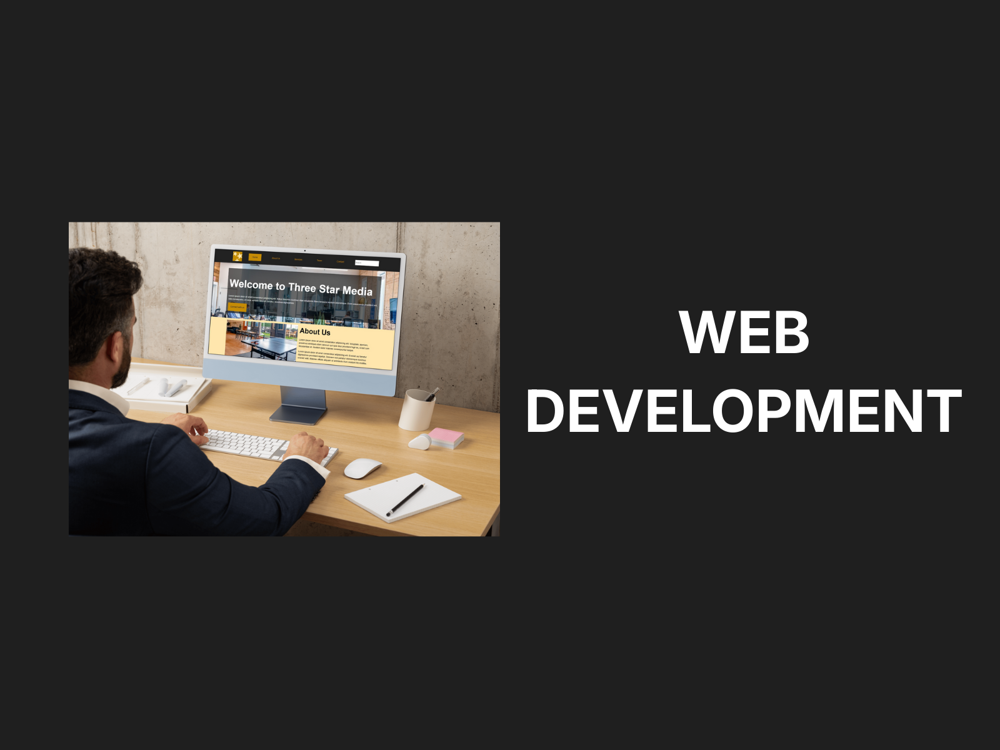
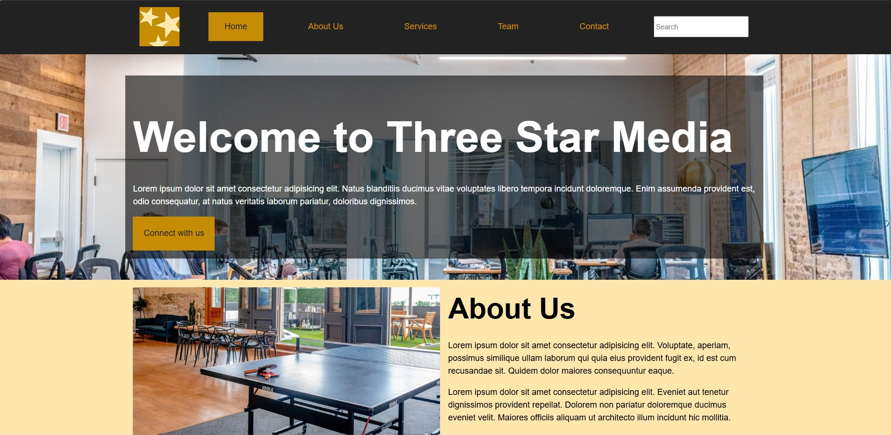
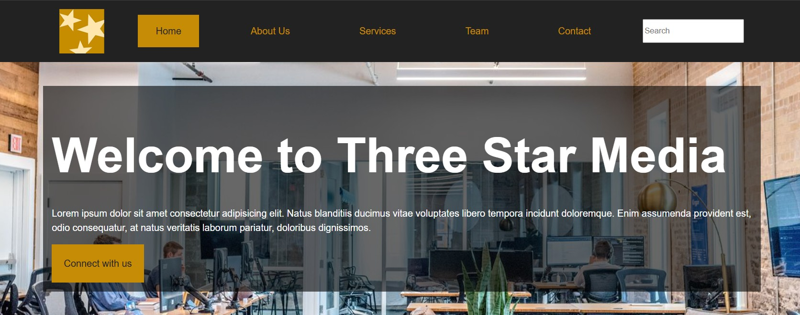
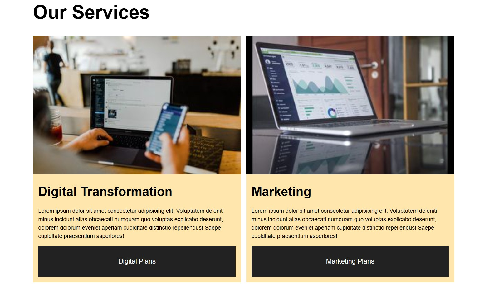
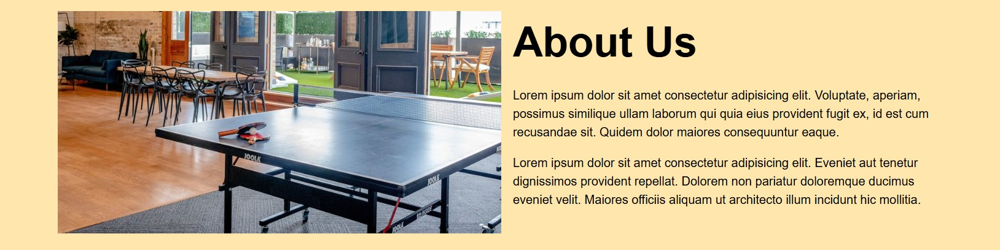
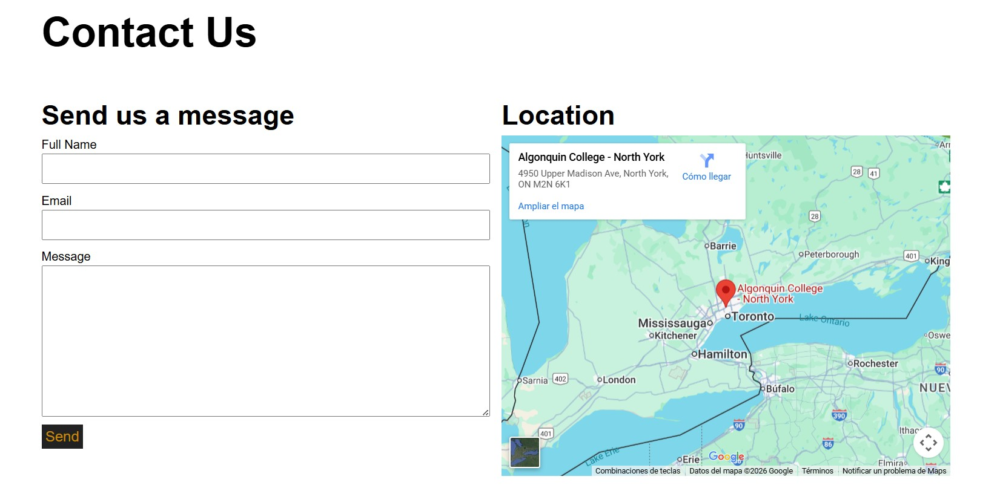

← Back to selected work
Web Development
Three Star Media
Web Designer and Front-End Developer for a multi-page academic website.

A responsive front-end development project.
This multi-page site was designed and developed with HTML and CSS to practice layout hierarchy, navigation, reusable page structure and responsive behavior.
Homepage & navigation


Supporting pages



Development focus
Responsive layout, content hierarchy and clear calls-to-action using a lightweight HTML/CSS implementation.